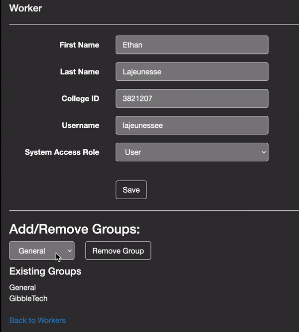
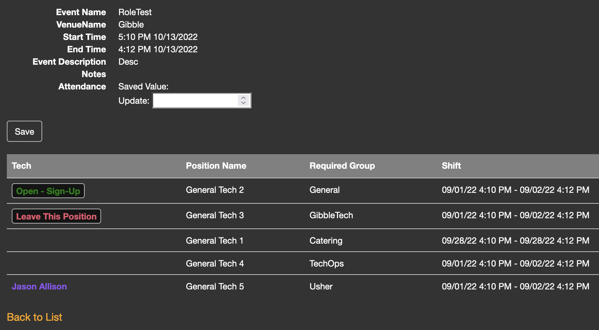
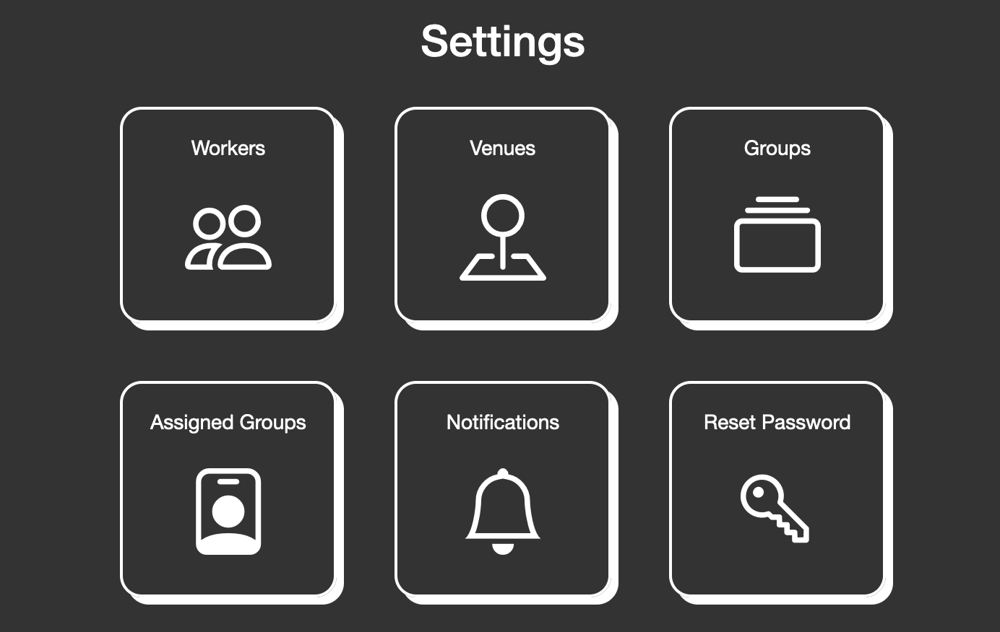

The Technical Operations website is an ASP.NET Core MVC Application using Entity Framework. This is a scheduling website that is used across the Elizabethtown College campus for many events. A limited number of staff members post events on this website along with the number of people needed to work these events. Workers can sign up for a shift on their own once the event is posted.
At the time I started this project, authentication was being done through LDAP. Another student developer had started the switch to Microsoft Identity authentication, however has not finished before graduation. I was tasked with finishing the switch and adding many more useful features to the website.
Adding/removing groups to/from workers.
Worker View
Before, the workers, venues, and groups tables were all on the same page. Now, they are all split up into separate pages, which can be accessed by the buttons on the new settings page.
